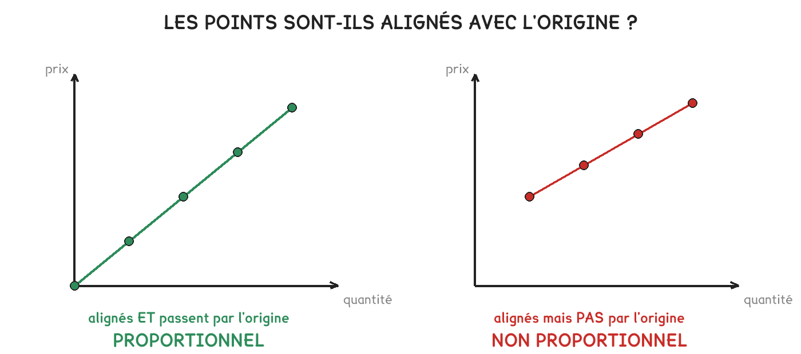

CAP Électricien · 1re année
Les deux prix montent tout droit. Un seul des deux est proportionnel : celui dont la droite part de zéro.
3 exercices · 8 items d'entraînement · 2 figures
Savoirs travaillés
Salle A : inscription gratuite, 3 € la séance. Salle B : 20 € une fois, puis 2 € la séance.
Série · CN
Série · CN

Proportionnel, c’est deux choses à la fois : les points sont alignés et la droite passe par l’origine. La salle B est alignée mais part de 20 € : elle n’est pas proportionnelle.
Les deux tarifs ne se comparent pas ligne à ligne : ils se comparent à nombre de séances égal. Et la réponse change selon ce nombre, ce qui est tout l’intérêt de la question.
Une différence de nature les sépare aussi : la salle A est proportionnelle, sa droite part de zéro — zéro séance, zéro euro. La salle B ne l’est pas : ses 20 € d’inscription se paient même sans venir.
Exercice · AA
Yanis prévoit 21 séances dans l’année. Combien paiera-t-il à la salle A ?
Exercice · AA
Et à la salle B, inscription comprise ?
Choisir la salle la moins chère « à la séance ». À deux séances, la salle B coûte 24 € contre 6 € : l’inscription pèse tant qu’on vient peu. Le classement s’inverse en cours de route.
Exercice · AA
En deux phrases : à qui conseillez-vous la salle A, à qui la salle B ?
Devant deux offres, on ne compare pas les tarifs : on compare les totaux, au même nombre de séances. Et on regarde d’où part la droite.
Ce site rappelle la méthode. Aucun corrigé, rien n'est noté.